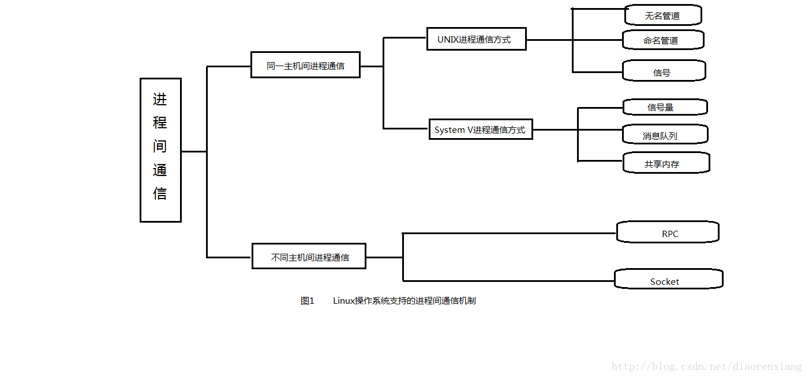

[toc]
自己的理解，
首先要区分概念：管道和管道通信
所谓“管道”，是指用于连接一个读进程和一个写进程以实现它们之间通信的一个共享文件，又名piPE文件 （是一种特殊的文件，这就意味着你可以向操作文件一样操作无名管道，无名管道在内核中对应的是一段特殊的内存空间，这段内存空间由操作系统进行管理，对用户是不可见的，在用户空间的应用程序中只能通过系统调用来访问它。在这段内存空间中以循环队列的方式来临时存储一个进程发往另外一个进程的信息，并且在通信完成后就会自动释放相应的空间。）
而管道通信是消息传递的一种特殊方式。
即管道是文件，是服务于管道通信的特殊文件，而管道通信是一种通信方式，这种通信方式比较特殊，是半双工的通信方式，即数据只能单向流动，数据传递的方式是字符流形式，它一般是应用在具有共同祖先的进程间使用。
-
管道通信是什么？
用于进程之间通信的一种通信方式。
-
管道通信有哪些特点？
半双工的通信方式，数据只能单向流动，数据传递的方式是字符流形式。
-
管道通信的应用场合？
具有共同祖先的进程间使用。
1、什么是管道
管道： —就像现实中的水管，水就像数据。（连接进程，相当于在进程间连接一个通路，用来传递信息） —管道是一种半双工的通信方式 —数据只能单向流动，而且只能在具有共同祖先的进程间使用。
所谓半双工的模式
（假设通信双方是甲方和乙方，双工通信方式的意思是甲可以向乙发送数据，乙也可以向甲发送数据，即数据流通是双向的。而半双工的通信方式是指甲乙两方不能同时向对方发送数据，也就是甲向乙发送数据时，乙只能接收不能发送，而乙向甲发送数据时，甲只能接收不能向乙发送数据）
举个例子： 形象来说类似一个单刀双掷开关，有两个选择，但是二者是互斥的，当选择了一方另一方就失效。 而对于此处的管道，可以把它想成是管道的一端，一次只能调用一种功能读入或者写入，二者也是互斥的。
管道通信是消息传递的一种特殊方式，管道机制必须提供以下三方面的协调能力：互斥、同步和确定对方的存在。
2、为什么要有管道
在一个多进程操作系统所提供的运行环境下，可以通过两种不同的途径或者说采用两种不同的策略，来建立起复杂的大型应用系统。一种途径就是通过一个孤立的,大型的，复杂的进程提供所需的全部服务，另外一种途径就是通过由若干相互联系的，小型的。相对简单的进程构成的组合来提供所需的功能。早期的操作系统往往倾向与前者，而Unix以及其衍生的各种操作系统往往倾向于后者。相比之下，后者有着各种好处：1.模块化，2.各个进程都得到保护，在相当程度上排除了相互干扰的可能性，3.灵活性更强。 当然这种好处也是要付出代价的，也有缺点，但是相比之下，这种途径的优点远远超出了其缺点。 Unix（从而Linux）向应用软件提供了一些进程间通信的手段，早期的Unix提供了：管道（pipe），信（signal），跟踪（trace）。
进程之间的通信，从物理上分，可以分为同主机的进程之间的通信和不同主机间的进程之间的通信。从通信内容方式上分，可以分为数据交互、同步通信、异步通信。
系统进程之间的通信方式大致如下图所示

集合上述两种从物理和内容方式的划分，可以这样理解上图：
（1）同主机进程间数据交互机制：无名管道（PIPE）、有名管道（FIFO）、消息队列（Message Queue）和共享内存（Shared Memory）。
（2）同主机进程间同步通信机制：信号量（Semaphore）。
（3）同主机进程间异步通信机制：信号（Signal）。
（4）不同主机间进程数据交互机制：套接字Socket）、远程调用RPC（Remote Procedure Call）。
管道通信
管道又可以分为无名管道和命名管道，两者的用途是不一样的。
无名管道PIPE：主要用于具有亲缘关系的进程之间的通信，无名管道的通信是单向的，只能由一段到另外一段；无名管道是临时性的，完成通信后将自动消失。一般采用先创建无名管道，再创建子进程，使子进程继承父进程的管道文件描述符，从而实现父子进程间的通信；在非亲缘关系管道之间，如果想利用无名管道进行通信，则需要借助另外的文件描述符传递机制。
有名管道FIFO：有名管道是一个实际存在的特殊文件，利用有名管道可以实现同主机任意进程之间的数据交互。
无名管道是一种特殊的文件，这就意味着你可以向操作文件一样操作无名管道，无名管道在内核中对应的是一段特殊的内存空间，这段内存空间由操作系统进行管理，对用户是不可见的，在用户空间的应用程序中只能通过系统调用来访问它。在这段内存空间中以循环队列的方式来临时存储一个进程发往另外一个进程的信息，并且在通信完成后就会自动释放相应的空间。
即无名管道主要用于具有亲缘关系的父子进程之间的通信，是临时性的，需要先创建管道，再创建子进程；管道都是单向的，若要实现双向通信，则需要两个管道。命名管道是实际存在的文件，使用前需要先打开，管道默认的read和write操作都是阻塞式的。
3、如何建立进程间管道？
这里我们只谈管道：父进程与子进程，或者两个兄弟进程之间，可以通过系统调用建立起一个单向的通信管道。但是，这种管道只能由父进程来建立，所以对于子进程来说是静态的，与生俱来的。管道两端的进程各自将该管道视作一个文件。一个进程往通道中写的内容由另一个进程从通道读出，通过通道传递的内容遵循“先入先出”（FIFO）的规则。每个通道都是单向的，需要双向通信时要建立起两个通道。
下面说一说进程间管道的建立，在这之前我们要说到fork()函数，在Linux系统中一个新的进程是由一个已经存在的进程“复制”出来的，而不是“创造”出来的（而所谓的“创建”实际上就是复制）。 管道机制的主体是系统调用pipe()，但是由pipe（）所建立的管道的两端都在同一个进程中，这样的管道起不到进程间通信的作用。所以必须在fork（）的配合下，才能在父子进程间或者两个子进程之间建立起进程间的通信管道。
下面就介绍一下怎样将管道用于进程间通信： （1）进程A创建了一个管道，创建完成时代表管道两端的两个已打开文件都在进程A中。
(2)进程A通过frok（）创建出进程B，在fork（）的过程中进程A的打开文件表按原样复制到进程B中。
(3)进程A关闭管道的读端，而进程B关闭管道的写段。于是，管道的写段在进程A中而读端在进程B中，成为了父子进程之间的通信管道。
(4)进程A又通过frok（）创建进程C，而后关闭其管道写段而与管道脱离关系，使得管道的写段在进程C中而读端在进程B中，成为两个兄弟进程之间的管道。
人们在认识到管道机制也存在一些缺点和不足。由于管道是一种“无名”，“无形”的文件，它可以通过fork（）的过程创建于“近亲” 的进程之间，而不能成为可以在任意两个进程之间建立通信的机制，更不可能成为一种一般的，通用的进程间通信模型，同时，管道机制的这种缺点本身强烈的暗示着人们，只要用“有名”，“有形”的文件来实现管道，就能克服这种缺点。所以有了管道之后，“命名管道”的出现时必然的。 为了实现“命名管道”，在“普通文件”，“块设备文件”，“字符设备文件”之外，又设立了一种文件类型，称为FIFO文件。对这种文件的访问严格遵循“先进先出”的原则。这样就可以像在磁盘上建立一个文件一样建立一个命名管道，具体可以使用命令mknod来建立。
函数介绍： ¢int read(intfd, void *buf, int count); —功能：从参数fd指定的读端读取管道数据到大小为count的缓存buf中，返回实际读取到的字节数。 —参数 ¢fd:管道读端 ¢buf:缓存区，保存读到的数据 ¢count:读取字节数
•intwrite(intfd, void *buf, intcount); •功能：向参数fd指定的写端从缓存buf中取出count个字节到管道中，返回值为实际写入的字节数。
•参数 •fd:管道写端 •buf:缓存区，将要写入管道的数据 •count:写入的字节数
参考来源： http://blog.csdn.net/followingturing/article/details/6071937